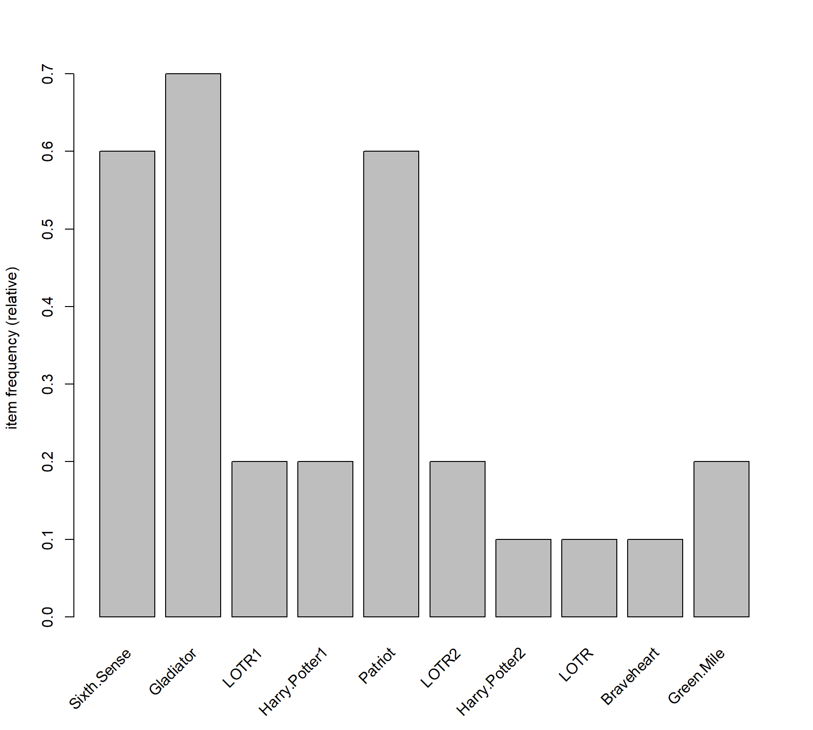
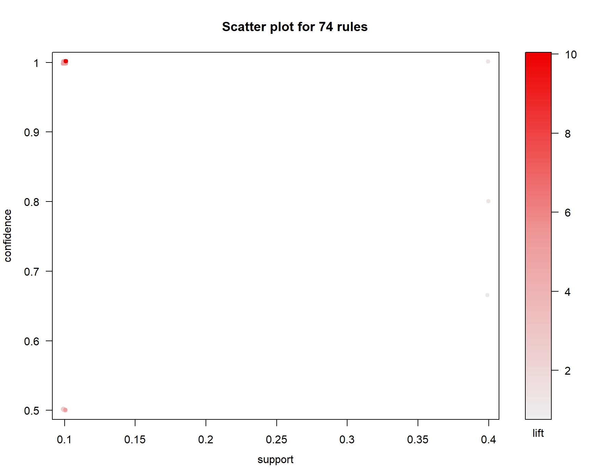
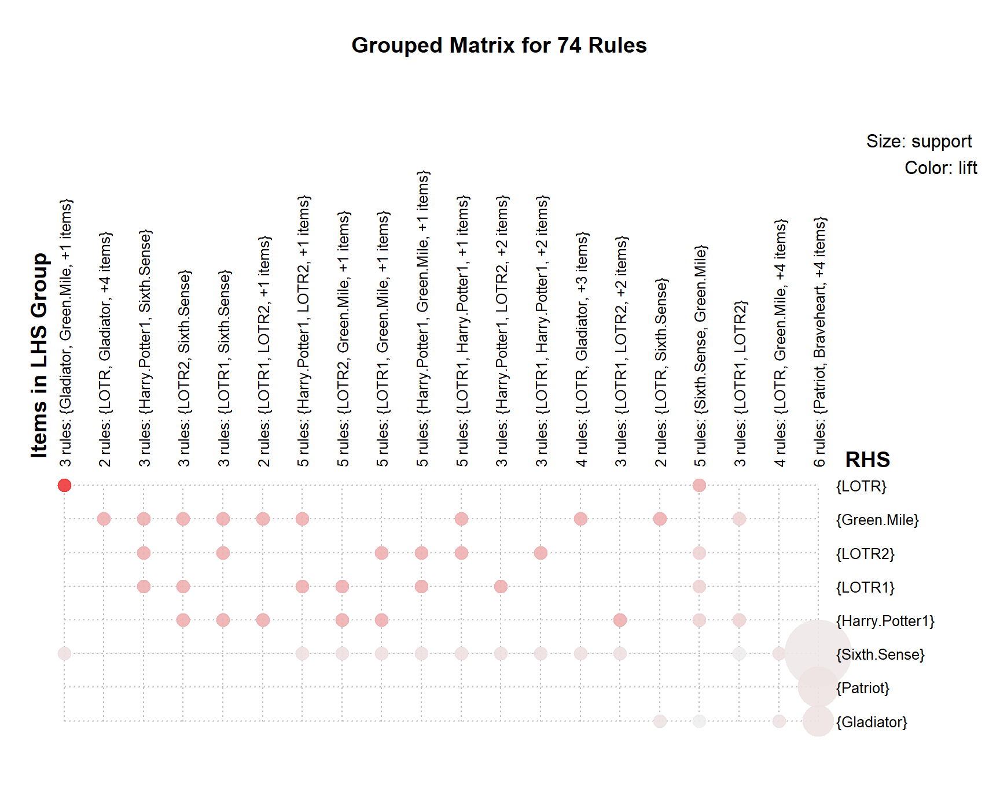
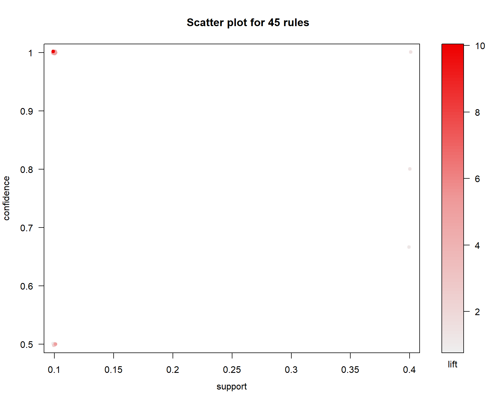
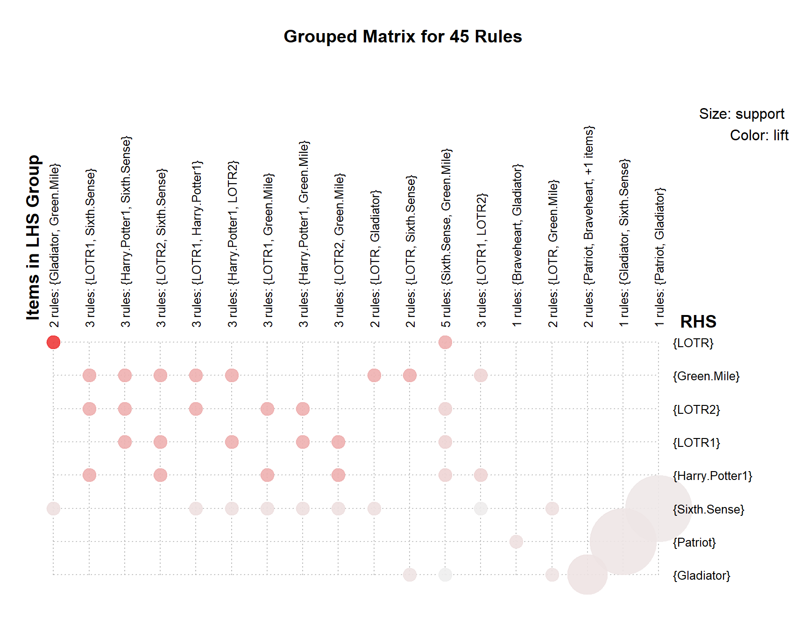

library(arules)
library(arulesViz)movies <- read.csv('C:/Users/Alex/Downloads/my_movies.csv')
class(movies) ## [1] "data.frame"str(movies)## 'data.frame': 10 obs. of 15 variables:
## $ V1 : Factor w/ 4 levels "Gladiator","Harry Potter1",..: 4 1 3 1 1 1 2 1 1 4
## $ V2 : Factor w/ 5 levels "Harry Potter2",..: 3 5 4 5 5 5 1 5 5 2
## $ V3 : Factor w/ 5 levels "","Braveheart",..: 4 2 1 5 5 5 1 1 5 3
## $ V4 : Factor w/ 2 levels "","Green Mile": 2 1 1 1 1 1 1 1 1 2
## $ V5 : Factor w/ 2 levels "","LOTR2": 2 1 1 1 1 1 1 1 1 1
## $ Sixth.Sense : int 1 0 0 1 1 1 0 0 1 1
## $ Gladiator : int 0 1 0 1 1 1 0 1 1 1
## $ LOTR1 : int 1 0 1 0 0 0 0 0 0 0
## $ Harry.Potter1: int 1 0 0 0 0 0 1 0 0 0
## $ Patriot : int 0 1 0 1 1 1 0 1 1 0
## $ LOTR2 : int 1 0 1 0 0 0 0 0 0 0
## $ Harry.Potter2: int 0 0 0 0 0 0 1 0 0 0
## $ LOTR : int 0 0 0 0 0 0 0 0 0 1
## $ Braveheart : int 0 1 0 0 0 0 0 0 0 0
## $ Green.Mile : int 1 0 0 0 0 0 0 0 0 1head(movies, n=10)This data we imported is in a mixed format (can be seen as transactions and matrix).
We need to extract the data we want via slicing. The extracted data will be converted to itemMatrix and we’ll work with that moving forward.
movies <- as(as.matrix(movies[,6:15]), "itemMatrix")
inspect(head(movies))## items
## [1] {Sixth.Sense,LOTR1,Harry.Potter1,LOTR2,Green.Mile}
## [2] {Gladiator,Patriot,Braveheart}
## [3] {LOTR1,LOTR2}
## [4] {Sixth.Sense,Gladiator,Patriot}
## [5] {Sixth.Sense,Gladiator,Patriot}
## [6] {Sixth.Sense,Gladiator,Patriot}itemFrequencyPlot(movies) # item frequency plot
We’ll use apriori algorithm with support=0.02, confidence=0.5 and minlen=3
mov_rule <- apriori(movies,
parameter = list(support=0.02, confidence=0.5, minlen=3))## Apriori
##
## Parameter specification:
## confidence minval smax arem aval originalSupport maxtime support minlen
## 0.5 0.1 1 none FALSE TRUE 5 0.02 3
## maxlen target ext
## 10 rules FALSE
##
## Algorithmic control:
## filter tree heap memopt load sort verbose
## 0.1 TRUE TRUE FALSE TRUE 2 TRUE
##
## Absolute minimum support count: 0
##
## set item appearances ...[0 item(s)] done [0.00s].
## set transactions ...[10 item(s), 10 transaction(s)] done [0.00s].
## sorting and recoding items ... [10 item(s)] done [0.00s].
## creating transaction tree ... done [0.00s].
## checking subsets of size 1 2 3 4 5 done [0.00s].
## writing ... [74 rule(s)] done [0.00s].
## creating S4 object ... done [0.00s].mov_rule # we get 74 rules## set of 74 rulesinspect(head(sort(mov_rule, by="lift"), n=10)) # view top 10 rules sorted by Lift## lhs rhs support confidence
## [1] {Gladiator,Green.Mile} => {LOTR} 0.1 1.0
## [2] {Sixth.Sense,Gladiator,Green.Mile} => {LOTR} 0.1 1.0
## [3] {Gladiator,LOTR} => {Green.Mile} 0.1 1.0
## [4] {Sixth.Sense,LOTR} => {Green.Mile} 0.1 1.0
## [5] {Sixth.Sense,Green.Mile} => {LOTR} 0.1 0.5
## [6] {LOTR1,Harry.Potter1} => {LOTR2} 0.1 1.0
## [7] {Harry.Potter1,LOTR2} => {LOTR1} 0.1 1.0
## [8] {LOTR1,Harry.Potter1} => {Green.Mile} 0.1 1.0
## [9] {LOTR1,Green.Mile} => {Harry.Potter1} 0.1 1.0
## [10] {Harry.Potter1,Green.Mile} => {LOTR1} 0.1 1.0
## lift count
## [1] 10 1
## [2] 10 1
## [3] 5 1
## [4] 5 1
## [5] 5 1
## [6] 5 1
## [7] 5 1
## [8] 5 1
## [9] 5 1
## [10] 5 1plot(mov_rule)## To reduce overplotting, jitter is added! Use jitter = 0 to prevent jitter.
plot(mov_rule, method='grouped') # Grouped Plot
plot(mov_rule,
method='graph',
measure='lift',
engine='htmlwidget',
control=list(max=20)) # Graph Plot for top 20 rules## Warning: Too many rules supplied. Only plotting the best 20 rules using lift
## (change control parameter max if needed)Rule 2
New set of rules with support=0.05, confidence=0.8 and minlen=4
mov_rule2 <- apriori(movies, parameter = list(support=0.05, confidence=0.8, minlen=4))## Apriori
##
## Parameter specification:
## confidence minval smax arem aval originalSupport maxtime support minlen
## 0.8 0.1 1 none FALSE TRUE 5 0.05 4
## maxlen target ext
## 10 rules FALSE
##
## Algorithmic control:
## filter tree heap memopt load sort verbose
## 0.1 TRUE TRUE FALSE TRUE 2 TRUE
##
## Absolute minimum support count: 0
##
## set item appearances ...[0 item(s)] done [0.00s].
## set transactions ...[10 item(s), 10 transaction(s)] done [0.00s].
## sorting and recoding items ... [10 item(s)] done [0.00s].
## creating transaction tree ... done [0.00s].
## checking subsets of size 1 2 3 4 5 done [0.00s].
## writing ... [29 rule(s)] done [0.00s].
## creating S4 object ... done [0.00s].mov_rule2 # We get 29 rules## set of 29 rulesinspect(head(sort(mov_rule2, by="lift"), n=10)) # View top 10 rules based on Lift## lhs rhs support confidence
## [1] {Sixth.Sense,Gladiator,Green.Mile} => {LOTR} 0.1 1
## [2] {Sixth.Sense,Gladiator,LOTR} => {Green.Mile} 0.1 1
## [3] {LOTR1,Harry.Potter1,LOTR2} => {Green.Mile} 0.1 1
## [4] {LOTR1,Harry.Potter1,Green.Mile} => {LOTR2} 0.1 1
## [5] {LOTR1,LOTR2,Green.Mile} => {Harry.Potter1} 0.1 1
## [6] {Harry.Potter1,LOTR2,Green.Mile} => {LOTR1} 0.1 1
## [7] {Sixth.Sense,LOTR1,Harry.Potter1} => {LOTR2} 0.1 1
## [8] {Sixth.Sense,LOTR1,LOTR2} => {Harry.Potter1} 0.1 1
## [9] {Sixth.Sense,Harry.Potter1,LOTR2} => {LOTR1} 0.1 1
## [10] {Sixth.Sense,LOTR1,Harry.Potter1} => {Green.Mile} 0.1 1
## lift count
## [1] 10 1
## [2] 5 1
## [3] 5 1
## [4] 5 1
## [5] 5 1
## [6] 5 1
## [7] 5 1
## [8] 5 1
## [9] 5 1
## [10] 5 1plot(mov_rule2,
method='graph',
measure='lift' ,
engine='htmlwidget',
control=list(max=30)) # Graph plot for all 29 rulesRule 3
We’ll eliminate a few rules by removing subsets in Rule 1 using Rule 2
subset <- which(colSums(is.subset(mov_rule2, mov_rule)) > 1)
mov_rule3 <- mov_rule[-subset] # we get 45 rules
inspect(head(sort(mov_rule3, by="lift"), n=10)) # View top 10 rules based on Lift## lhs rhs support confidence lift
## [1] {Gladiator,Green.Mile} => {LOTR} 0.1 1.0 10
## [2] {Gladiator,LOTR} => {Green.Mile} 0.1 1.0 5
## [3] {Sixth.Sense,LOTR} => {Green.Mile} 0.1 1.0 5
## [4] {Sixth.Sense,Green.Mile} => {LOTR} 0.1 0.5 5
## [5] {LOTR1,Harry.Potter1} => {LOTR2} 0.1 1.0 5
## [6] {Harry.Potter1,LOTR2} => {LOTR1} 0.1 1.0 5
## [7] {LOTR1,Harry.Potter1} => {Green.Mile} 0.1 1.0 5
## [8] {LOTR1,Green.Mile} => {Harry.Potter1} 0.1 1.0 5
## [9] {Harry.Potter1,Green.Mile} => {LOTR1} 0.1 1.0 5
## [10] {Sixth.Sense,LOTR1} => {Harry.Potter1} 0.1 1.0 5
## count
## [1] 1
## [2] 1
## [3] 1
## [4] 1
## [5] 1
## [6] 1
## [7] 1
## [8] 1
## [9] 1
## [10] 1plot(mov_rule3)## To reduce overplotting, jitter is added! Use jitter = 0 to prevent jitter.
plot(mov_rule3, method='grouped') # Grouped Plot
## Don't forget to zoom in and out of this graph
plot(mov_rule3,
method='graph',
engine='htmlwidget',
control=list(max=50)) # Graph plot for all 45 rulesList of movies we have:
Braveheart, Gladiator, Green.Mile, Harry.Potter1, Harry.Potter2, LOTR, LOTR1, LOTR2, Patriot, Sixth.Sense
All movie franchises should be placed together/next to each other
The movie Green Mile can be placed near movies like Sixth Sense, Gladiator, and LOTR (The Lord of the Rings) Series
The Patriot can be placed near movies like Gladiator and Braveheart
LOTR Series can be placed near Gladiator, Sixth Sense and Green Mile
Harry Potter Series can be placed next to LOTR Series